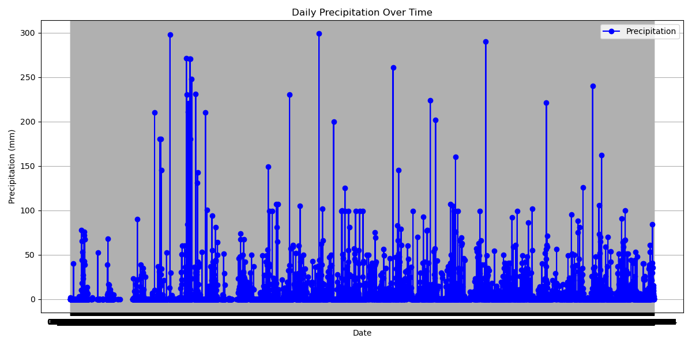
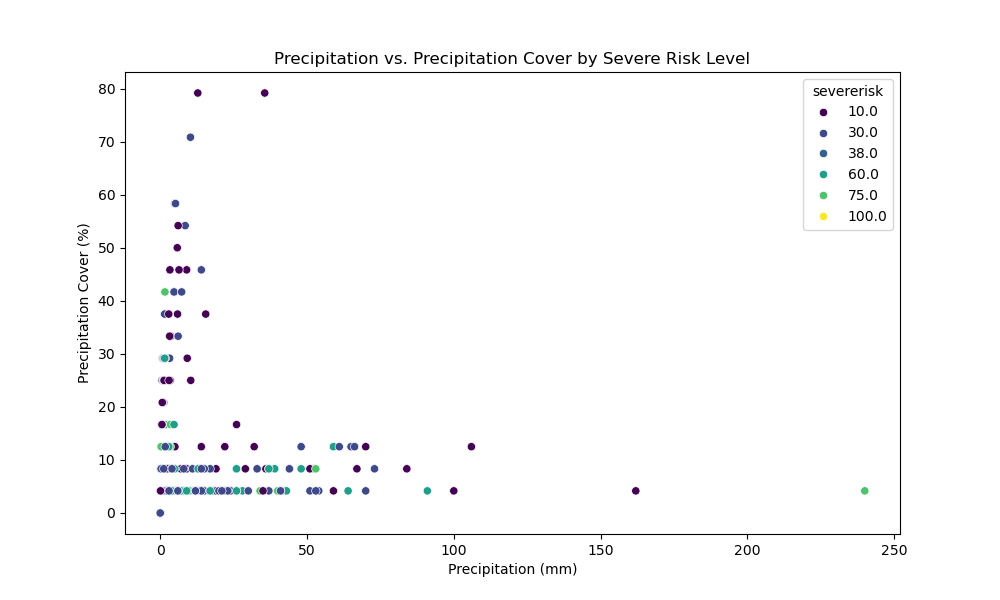

Introduction
Lagos State is located in the southwestern part of Nigeria, on the Atlantic coast in the Gulf of Guinea. It is Nigeria's smallest state by land area but one of its most populous and economically significant states. The region features diverse geography characterized by coastal areas, including the Lagos Lagoon and numerous islands such as Lagos Island, Victoria Island, and Ikoyi. The topography is predominantly flat, with low-lying terrain across much of the mainland and islands, influencing urban development, drainage systems, and environmental management.
Floods
Floods are a recurrent challenge in Lagos State, exacerbated by rapid urbanization, inadequate drainage infrastructure, and seasonal rainfall patterns. The city's low-lying topography and proximity to water bodies like the Lagos Lagoon and Atlantic Ocean amplify flood risks, especially during the rainy season. These floods often result in displacement, damage to property and infrastructure, economic losses, and health risks for residents. Despite efforts by the Lagos State government to improve drainage systems and implement mitigation measures, addressing the root causes of flooding remains a critical and ongoing challenge.
Flood Prediction
The importance of flood prediction for Lagos is paramount. It enables authorities to implement timely risk mitigation measures such as evacuations and flood barriers, thereby reducing property damage and preventing loss of lives. Predictions also play a crucial role in guiding infrastructure planning, facilitating the design of resilient drainage systems and urban layouts that minimize flood impact. Additionally, accurate flood forecasts enable efficient allocation of resources for emergency response and relief efforts. Monitoring flood patterns contributes significantly to environmental management by aiding in the preservation of ecosystems and maintaining water quality.
DATA COLLECTION AND ANALYSIS
Report Goal
Predict the next flood date.
Methodology
Utilized Jupyter Notebook with a Python kernel.
Prediction
Predicted Date by day: 10th-11th July, 2024.
Primary Date by hour: 10th July, 2024.
Daily Flood Prediction
Historical data on meteorological variables (temperature, precipitation, humidity, wind speed, and pressure) were collected to analyze past flood occurrences in Lagos. This dataset served as the foundation for developing predictive models.


Prediction Model
Selected a robust predictive model validated against historical data and current weather patterns, ensuring accuracy in flood prediction.
Findings and Results


Conclusion
Flood prediction plays a critical role in mitigating risks and enhancing resilience in Lagos State.
Recommendations
Advocation for improved drainage infrastructure, early warning systems, and community resilience programs based on predicted flood dates.
Justification for Predicted Date
The predicted date of the next flood in Lagos integrates historical flood occurrences, current weather patterns, and assessments of local infrastructure. Machine learning models were instrumental in analyzing these factors to forecast flood events, highlighting the critical need for proactive flood management strategies.
Overall Assessment:
The RMSE values (both cross-validated and test) suggest that your model's predictions are relatively close to the actual values, which is a good sign of predictive accuracy.
The R-squared values (both cross-validated and test) indicate that while your model explains some of the variance in the target variable, there is room for improvement. Higher R-squared values would indicate a better fit of the model to the data.
For additional insights and learning opportunities, check out
HNG Internship and
HNG Premium. You can access the dataset and further details from
my Github.